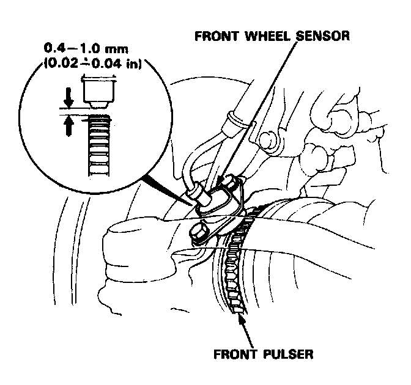

Component Inspection

Pulsers/Wheel Inspection
1. Check the pulser for chipped or damaged teeth.
(A front wheel sensor and pulser are shown; the rear wheel sensors and pulsers are similar.)
2. Measure the air gap between the wheel sensor and pulser all the way around while rotating the driveshaft by hand.
Standard: 0.4-1.0 mm (0.02-0.04 in)
NOTE: If the gap exceeds 1.0 mm (0.04 in), the probability is a distorted knuckle which should be replaced.